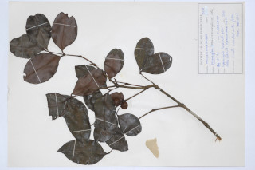
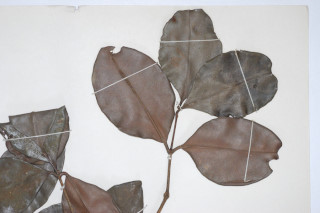

Images :



| Habit : | Large shrub or small trees . |
| Leaves : | Leaves simple , opposite , decussate ; petiole 0.5-0.7 cm, planoconvex in cross section, glabrous ; lamina 14 x 7.5 cm, broadly elliptic , apex acute to acuminate or obtuse , base acute to subattenuate , margin entire , shining above, coriaceous , glabrous ; midrib flat above; secondary_nerves and intramarginal_nerves obscurely visible when dry; tertiary_nerves not visible. |
| Inflorescence / Flower : | Inflorescence condensed or umbel shaped cymes , peduncle 0.4 cm long, axillary ; flowers distinctly pedicellate , purple; calyx deeply furrowed with radiating wing inside. |
| Fruit and Seed : | Berry , 1.5-2 cm across, globose with remnants of persistent_calyx ; seed 1. |